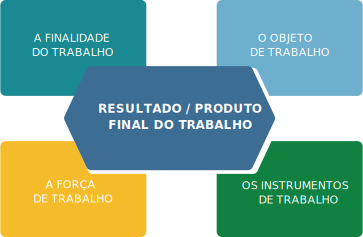

TÓPICO 1
PROCESSO DE TRABALHO EM SAÚDE
TÓPICO 1
PROCESSO DE TRABALHO EM SAÚDE
Ao contrário dos animais que agem por instinto, o trabalho humano tem sempre uma intencionalidade. Para compreender de forma concreta o processo de trabalho, é pertinente conhecer os elementos básicos que o envolvem.
Clique em cada elemento para conhecer sua intencionalidade.
A FINALIDADE DO TRABALHO
Necessidade conforme demanda.
O OBJETO DE TRABALHO
Corresponde à matéria que será transformada por meio da ação do trabalhador e, no final do processo, estará modificada (JACONDINO, 2019; MASCARENHAS, 2019).
A FORÇA DE TRABALHO
Refere-se a todos que realizam o trabalho e advém da intenção de transformar a natureza em algo com significado especial.
Pode ser concomitantemente o produtor e o consumidor daquele trabalho, assim como produzir bem ou serviço para outra pessoa consumir (MARX, 2012).
OS INSTRUMENTOS DE TRABALHO
Refere-se aos meios usados pelo trabalhador, no sentido de realizar o seu ofício e transformar o objeto de trabalho (MARX, 2012).
Alguns autores entendem que os instrumentos de trabalho correspondem, por um lado, a equipamentos, máquinas, materiais de consumo e, por outro lado, a conhecimentos, modelos e técnicas que orientam o trabalhador.
Salienta-se também que o produto do trabalho de um trabalhador pode ser o instrumento de trabalho de outra pessoa ou dele próprio em momentos distintos.